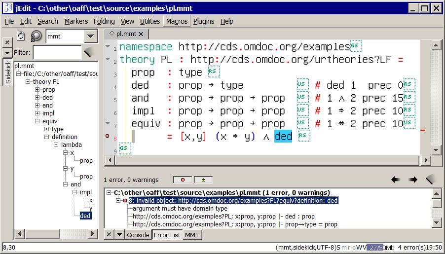
Parsing and type-checking are run in the background and populate sidebar and error list.
big image
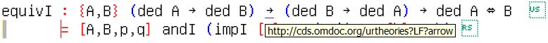
Control-hovering over an operator (here: the arrow symbol) shows its logical URI and control-click navigates to the physical location of its declaration.
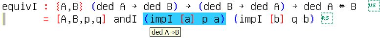
Doubleclicking an operator (here: impI) selects the closest subexpression based on the abstract syntax tree
Hovering over a selected expression shows its dynamically infered type.
This works even for ill-formed expressions, which MMT analyzes as much as possible.
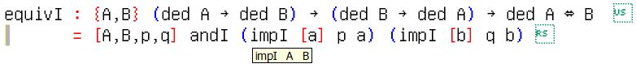
Hovering over an operator (here: impI) shows its infered arguments
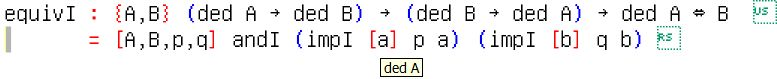
Hovering over a variable shows its infered type
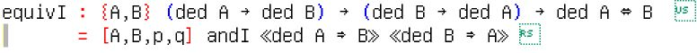
The ErrorsPlugin adds special objects for open proof goals together with notations and typing rules for them.
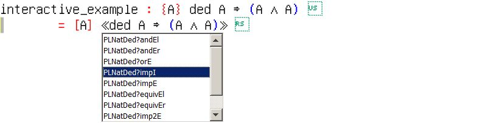
Context-sensitive auto-completion: Only operators whose return type matches the current goal are shown, and choosing a completion option inserts the new goal(s) automatically.
These screenshots are taken from the web interface of MMT.
Many of these features are also shown in a demo video about the server.
A live instance of the MMT server can be found at http://cds.omdoc.org:8080/
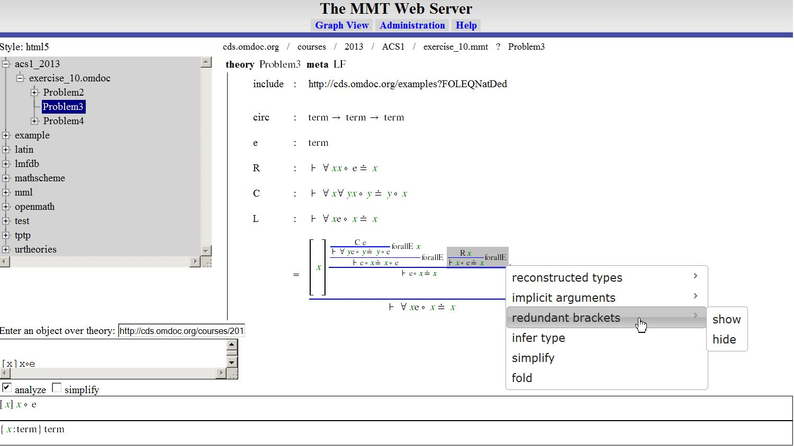
An overview of features in the web browser.
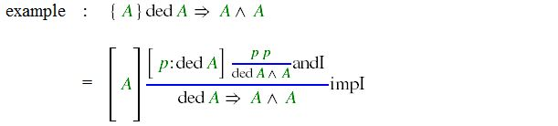
Two-dimensional notations: 2-dimensional notations can be given explicitly or can be computed by the system.
The LF plugin automatically adds 2-dimensional notations for proof rules, which build proof trees (including the necessary type inference of every subterm).
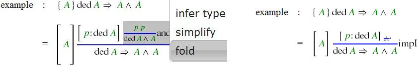
Any subterm can be folded.
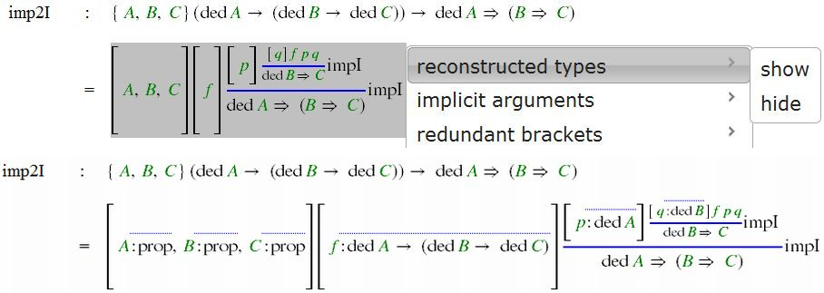
A subexpression's inferred types, arguments, and brackets can be displayed on demand.
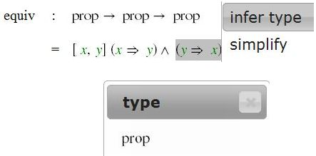
The type of every subexpression can be inferred on demand.
This interaction is by sending Ajax/QMT query to the MMT server.
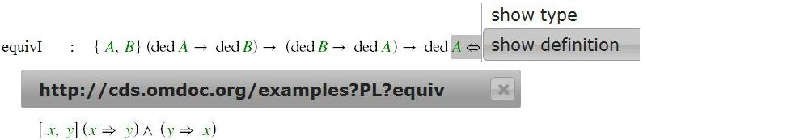
The type and definition of an operator can be retrieved on demand.
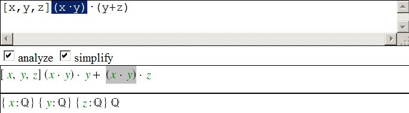
The MMT web server as an OpenMath/MathML editor: entered objects are parsed, type-checked, and simplified relative to the selected theory and finally presented.
While typing, the focus/selection in the source and the presentation are synchronized - and synchronization is preserved even terms are rearranged or (as here) duplicated during simplification.
var query = qmt.present(qmt.simplify(qmt.parse(qmt.literalString(INPUTSTRING))))
qmt.exec(query,
function(mathml){
// this function is run as soon as the Ajax query to the QMT server has returned
}
)
This uses the qmt object, which is a part of the MMT web server.
{kind=link}